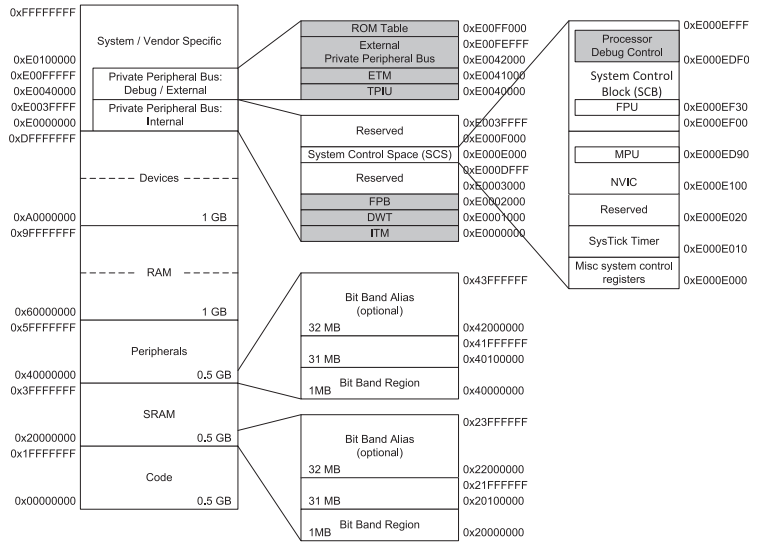
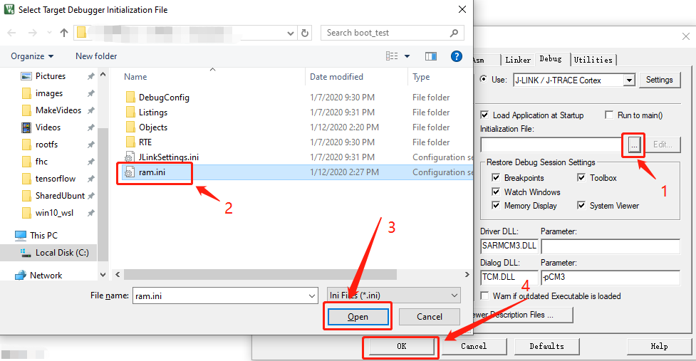

STM32的三种启动方式#

如上图所示，STM32内部一共有两块物理存储设备（Flash和SRAM）和三块存储区域（Main Flash Memory、System Memory和SRAM）。这三块存储区域也就是STM32的三个启动空间。
1. 为什么它们可以是启动空间？#
Cortex®-M3微处理器的存储器映射是固定的（由ARM制定），代码区域从0x0000 0000地址开始（通过ICode/DCode bus 访问），数据区域从0x2000 0000地址开始（通过System Bus访问），如下图所示：

Cortex®-M3 CPU上电后，默认从0x0000 0000地址处取得栈顶地址，然后通过ICode bus从0x0000 0004地址处取得复位向量，然后开始执行代码。
ICode bus只能访问代码区域（0x0000 0000 ~ 0x1FFF FFFF），所以启动空间必须在代码区域。
STM32内部Flash就位于代码区域，并且通过 “ 存储器别名（memory alias） ”技术，可以将STM32的Main Flash Memory的地址空间0x0800 0000 ~ 0x0801 FFFF映射为0x0000 0000 ~ 0x0001 FFFF，对于System memory也是同样的道理。所以STM32可以从Main Flash Memory和System memory启动。
至于为什么STM32还能从SRAM启动，ST官方资料 en.CD00171190中的 3.4节 给出的说明是：
STM32F10xxx microcontrollers implement a special mechanism to be able to boot also from SRAM and not only from main Flash memory and System memory.
STM32F10xxx微控制器实现了一个特殊的机制使得STM32不仅能够从Flash memory 和 System memory启动，也能够从SRAM启动。
2. 从STM32内部Flash启动(Main Flash Memory)#
这个是平时使用最多的方式，将程序下载到STM32内部Flash，然后从Flash启动。
3. 从STM32内部系统存储启动（System Memory）#
System Memory中是ST预置的boot loader程序，用于通过串口下载用户程序到Flash。程序下载完毕后，重新将启动模式设置为 “从Flash启动” ，然后开机运行用户程序。
4. 从SRAM启动#
4.1 为什么需要从SRAM启动#
可能的原因有以下几点（参考资料《ARM Cortex M3 & M4权威指南》15.7节 下载地址）：
-
所使用的设备可能具有OTP ROM（仅可进行一次编程），因此在最终确定前，是不会将程序编程到芯片中的。
-
有些微控制器中没有内部Flash存储器，需要使用外部的存储器，在软件开发期间，可能会想用内部的SRAM进行测试。
-
对于产品测试或者特定方面的测试，不想改动Flash中现有的程序实现某些新功能的测试工作，此时可以将测试代码下载到SRAM中运行。
-
对于Flash存储器比较小的系统，可能想在启动阶段将程序从Flash复制到SRAM中以提高性能，并在SRAM中执行程序以达到最佳性能。
4.2 STM32从SRAM启动的方法#
通常我们会使用下载器将程序直接下载到SRAM中，然后配置栈指针、PC指针和中断向量表偏移地址，从而实现从SRAM启动。
下面我们以STM32F103C8T6（RAM大小为20K）为例，演示配置过程：
4.2.1. 修改链接脚本#
按照下图所示方式，即可在Keil编辑器中打开链接脚本。

上述操作之后，会在Keil的编辑器中打开一个链接脚本文件，将内容修改如下：
; 以STM32F103C8T6为例
LR_IROM1 0x20000000 0x00005000 { ;装载地址为SRAM首地址
RW_IRAM1 0x20000000 0x00005000 { ;执行地址==装载地址
*.o (RESET, +First)
*(InRoot$$Sections)
.ANY (+RO)
.ANY (+XO)
.ANY (+RW +ZI)
}
}
4.2.2. 修改Keil中的Flash Download设置#
因为是直接从SRAM启动并执行程序，不需要对Flash进行操作，所以把Flash相关操作全部去掉。

4.2.3. 配置栈指针、PC指针和中断向量表偏移#
编写调试器初始化文件RAM.ini，其内容如下：
SP = _RDWORD(0x20000000); // 设置栈指针
PC = _RDWORD(0x20000004); // 设置PC指针
_WDWORD(0xE000ED08, 0x20000000); // 设置中断向量表偏移
然后按照下图所示方式将该初始化文件配置到Keil：

以上就是完整的配置，现在编译项目并点击调试，就能看到程序成功在SRAM中运行了。
如果出现如下所示的警告，可以直接忽略。因为我们是将程序下载到SRAM并从SRAM启动，所以无需操作Flash。